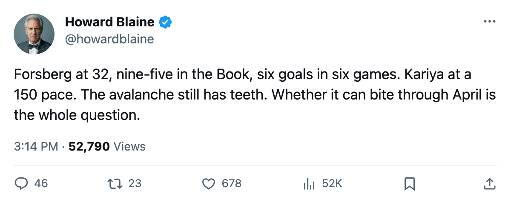
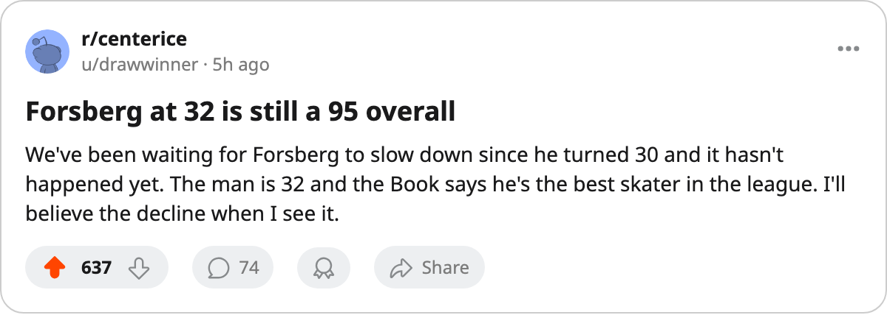

Three Men Aged 29, 31 and 32: The Avalanche's Offense Is Running on the Right Side of 40
Forsberg, Kariya and Hejduk are carrying paces above their career baselines at an age when most lines slow, and Colorado has the fourth-highest payroll in hockey to fund it
 Howard BlaineSenior writer, The Blaine Rankings · The Hockey Gazette
Howard BlaineSenior writer, The Blaine Rankings · The Hockey Gazette
 Peter Forsberg89 is 32 years old. He has 6 goals and 10 points in 6 games for the
Peter Forsberg89 is 32 years old. He has 6 goals and 10 points in 6 games for the  Colorado Avalanche Avalanche, a pace of 137 points over 82.
Colorado Avalanche Avalanche, a pace of 137 points over 82.  Paul Kariya83 is 31, and carries 11 points in 6 with 8 of them assists, a pace of 150.
Paul Kariya83 is 31, and carries 11 points in 6 with 8 of them assists, a pace of 150.  Milan Hejduk82 is 29, 10 points in 6, 7 of them assists, also 137. No trio in this league puts up that combination of paces from three men at that stage of their careers.
Milan Hejduk82 is 29, 10 points in 6, 7 of them assists, also 137. No trio in this league puts up that combination of paces from three men at that stage of their careers.
The question the desk wants to put in print now, before February buries it, is whether this is the end of a window or the beginning of one. Colorado's payroll is $68.21M, the fourth-highest in the league, and their cost per point sits at $8.53M. That is not efficient, nor is it the disaster the Presidents' Trophy race implies. Through 6 games the Avs are 2-1-2, tied for fourth in the Western Conference at 8 points, and their 3.50 goals per game is tied for third in the league.
The age profile and the base rate
Forsberg carries a 95 overall in the Book, the highest grade of any skater in this league. Iginla's 94 is second. Kariya's 89 puts him in a group with  Mario Lemieux88 and
Mario Lemieux88 and  Todd Bertuzzi93. Hejduk sits at 88, the same as
Todd Bertuzzi93. Hejduk sits at 88, the same as  Ryan Smyth86. These are not fringe players carrying hot starts. Their base rates from last season put Forsberg at 129 points, Hejduk at 124 and Kariya at 108, all in 82 games. Their current paces clear those marks: Forsberg is running 137 against a 129 base, Kariya is running 150 against a 108 base, Hejduk is running 137 against a 124 base.
Ryan Smyth86. These are not fringe players carrying hot starts. Their base rates from last season put Forsberg at 129 points, Hejduk at 124 and Kariya at 108, all in 82 games. Their current paces clear those marks: Forsberg is running 137 against a 129 base, Kariya is running 150 against a 108 base, Hejduk is running 137 against a 124 base.
Kariya is the outlier in the most interesting direction. His 150-point pace in 6 games against a 108-point base represents a 39 percent above-baseline rate. If it holds, it puts him back in the tier he occupied during his best years, the ones before the trade to Colorado changed his role. He is 31, healthy, and carrying 25.0 minutes per game. The Book has him at 89 today.
Forsberg's 6 goals in 6 games at 32, with 24.8 minutes of ice time per night, tracks his career pattern of short bursts of excellence at age. His 95 overall in the Book is the highest mark on any skater's card, which means the Bureau's current evaluation of him is that he is still the best forward in this league, full stop.
The cost side and what it means for April
At $68.21M the Avalanche carry the fourth-largest payroll in the league, behind  New York Rangers New York at $92.95M,
New York Rangers New York at $92.95M,  Toronto Maple Leafs at $89.94M and
Toronto Maple Leafs at $89.94M and  St. Louis Blues at $69.76M. Their $8.53M per point through 6 games is 12th in the league. That is not the number a club with this much money on its books wants to see, but it is a number computed on 8 standings points earned through 6 games, and the sample will shift. Their remaining 76 games include 18 divisional contests against
St. Louis Blues at $69.76M. Their $8.53M per point through 6 games is 12th in the league. That is not the number a club with this much money on its books wants to see, but it is a number computed on 8 standings points earned through 6 games, and the sample will shift. Their remaining 76 games include 18 divisional contests against  Calgary Flames,
Calgary Flames,  Edmonton Oilers,
Edmonton Oilers,  Vancouver Canucks and
Vancouver Canucks and  Minnesota Wild.
Minnesota Wild.
The structural concern runs past this season's efficiency to the age of the three men carrying this team's offense: 29, 31 and 32. The youngest of them, Hejduk, will be 30 by the end of the season. Forsberg will be 33 in the spring. If this pace holds through December and then collapses in January, the desk will say so. If it holds through February, the window that Denver has been building around Forsberg since the 2003-04 season, when he managed 129 points in 82 games and the club won the Jack Adams Award through coach Tony Granato, remains open by one more year.
| player | age | pts | GP | pace | last season pts | last season GP | overall |
|---|---|---|---|---|---|---|---|
| Forsberg | 32 | 10 | 6 | 137 | 129 | 82 | 95 |
| Kariya | 31 | 11 | 6 | 150 | 108 | 82 | 89 |
| Hejduk | 29 | 10 | 6 | 137 | 124 | 82 | 88 |
The rest of Colorado's scoring through 6 games comes from depth players whose individual paces do not place them in the league's top 30. The team's 21 goals have come from a narrow column. That is not a criticism at this stage; the best teams in this league, from Toronto to Dallas to Calgary, run narrow scoring columns in October. The question at 29, 31 and 32 is how long the column stays narrow before the legs go. The desk will check in December.

